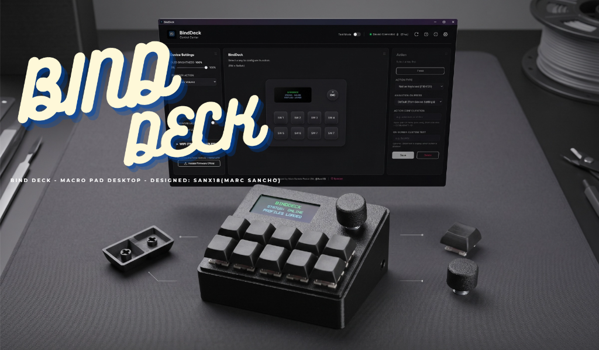

https://github.com/SanX18/BindDeck
💻 Software & Firmware Dev

Software & Firmware Development · Control Center + ESP32
BindDeck — Macro Pad & Control Center Desktop App
Aplicación de escritorio y software de control a medida para ejecución de macros complejas, comandos de sistema y control multimedia en tiempo real. Programado con protocolo serie de baja latencia vinculado a microcontrolador ESP32.
- Programación Control Center: Aplicación Desktop para asignación de teclas y acciones.
- Firmware C++/Arduino: Gestión de interrupciones y comunicación serie bidireccional en ESP32.
- Modelado 3D CAD: Carcasa y botones 100% diseñados en CAD por Marc Sancho.
💻 Control Center Desktop App
⚡ Firmware C++ Low-Latency
📐 100% Custom 3D CAD Chassis